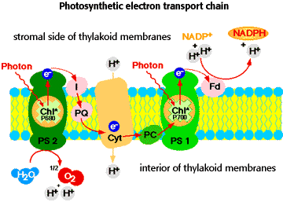
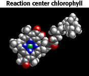
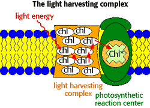

Photosynthesis Problem Set 1
Problem 11 Tutorial: Photosystem II features
Which of the following is NOT true of photosystem II?
| A. |
It is located in thylakoid membranes. |
| B. |
It is involved in the oxidation of water. |
| C. |
It has a special oxidizable chlorophyll, P680. |
| D. |
It has an associated antenna complex for light harvesting activity. |
| E. |
It is required for cyclic photophosphorylation. |
Photosystem II is located in the thylakoid membranes of chloroplasts
| Photosystem II, photosystem I, and the components of the photosynthetic electron transport chain are intrinsic proteins of the thylakoid membranes of the chloroplast. A schematic diagram of the important enzymes of the thylakoid membranes, showing the path of electrons and protons during the light reactions is shown to the right. |
 |
Photosystem II is the site for oxidation of water
When photosystem II is excited by absorption of a photon of light energy, and expels an electron to the photosynthetic electron transport chain, the oxidized form of the reaction center chlorophyll molecule is transiently created (Chl+). This Chl+ species is a very strong oxidizing agent, and is able to accept electrons from water. Water is oxidized on the inner side of the thylakoid membrane, donating electrons to the oxidized PS II reaction center. Oxygen is released as a by product of water oxidation, and the protons released contribute to the H+ gradient used as the energy source for ATP synthesis.
Photosystem II has a special, oxidizable chlorophyll
| At the core of the PS II reaction center lie a special pair of chlorophyll molecules. One of these, designated P680 for it's characteristic spectral properties, is the chlorophyll that actually undergoes oxidation during photosynthetic electron transport. The other chlorophyll molecules in the reaction center and the antenna complex serve to transfer light energy to the special chlorophyll of the reaction center. PS I also has a special, oxidizable chlorophyll designated P700. The structure of the chlorophyll from the reaction center of a photosynthetic bacteria is shown in the molecular model. |
 |
Photosystems II and I have antenna complexes for light harvesting activity
| Associated with the reaction centers are multisubunit protein complexes containing several hundred light absorbing pigment molecules, chlorophyll molecules and other accessory pigments. Light energy absorbed by any pigment molecule in the antenna complex is transferred from pigment to pigment by resonance until it reaches the reaction center pigment where the electron transfer process begins. |
 |
PS II is not involved in cyclic photophosphorylation
A photon of light energy absorbed by photosystem I results in the excited state P700* pigment which undergoes oxidation to P700+. Electrons are cycled from photosystem I via the photosynthetic electron transport chain back to the reaction center, where P700+ is reduced to P700. Electron transport leads to formation of a pH gradient, and ATP is produced. No reduction of NADP+ occurs; No oxidation of water occurs; It requires only photosystem I — photosystem II is not needed. Light energy used to establish pH gradient that is a chemiosmotic energy source for chloroplast ATP synthase. |